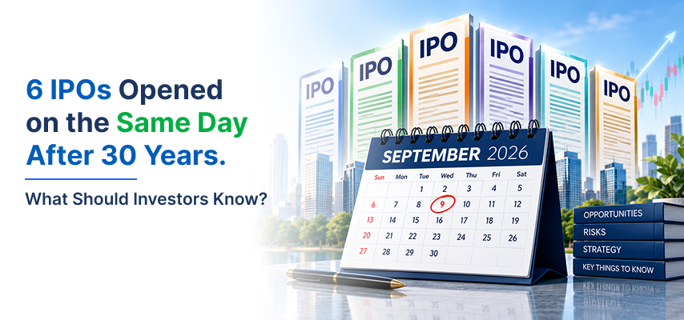

6 IPOs Opened on the Same Day After 30 Years. What Should Investors Know?

India's IPO market is entering an unusually busy phase. On September 9, six mainboard IPOs opened for subscription on the same day, something that had not happened in nearly 30 years.
For investors who regularly track the primary market, this is certainly an interesting development. With more companies coming to the market, investors now have more opportunities to choose from. Those who followed the IPO online route, however, should avoid making decisions simply because several issues opened up together.
The six companies that has entered the market are Rentomojo, Asset Reconstruction Company (India), Manipal Payment and Identity Solutions, Steamhouse India, LCC Projects and Karamtara Engineering. Together, these issues are looking to raise around ₹4,509 crore.
Six IPOs, One Day: What Makes This Significant?
The last time exactly six IPOs opened on a single day was October 14, 1996, according to historical data from Prime Database.
The difference in scale is striking. The six IPOs that opened on that day in 1996 raised just around ₹22 crore. This time, the six issues are looking to raise thousands of crores.
And this is not just a one-day event. The IPO calendar is packed throughout the week, with 12 mainboard IPOs scheduled between September 7 and September 11. Together, they are targeting approximately ₹7,180 crore.
So, what is driving this sudden rush?
Is the IPO Boom Taking Attention Away From Listed Stocks?
Interestingly, the growing interest in IPOs may also be changing where investors are putting their money.
Market observers have pointed out that some investor interest has shifted from the secondary market, where existing shares are traded, towards the primary market, where new shares are issued.
Foreign portfolio investors have also directed some money towards the primary market even as they have reduced exposure to parts of the secondary market.
Recent IPO listings have added to the excitement. Stocks such as Milky Mist, ESDS Software and Tempsens Instruments have delivered strong gains after listing, with some more than doubling from their IPO price. At the same time, some of these stocks have also seen corrections after their initial rise.
That is an important reminder for investors: a strong listing does not necessarily mean a strong long-term investment.
What are Investors Getting From These Six IPOs?
The six issues represented businesses from very different sectors.
- Rentomojo operates in the online rental and subscription space for furniture and appliances. Its IPO is priced in the ₹384 to ₹404 range and includes both a fresh issue and an Offer for Sale (OFS).
- Asset Reconstruction Company (India), or ARCIL, is looking to raise around ₹733 crore through an issue that is entirely an OFS.
- Manipal Payment and Identity Solutions has an IPO size of around ₹805 crore, consisting of a ₹320 crore fresh issue and an OFS component of around ₹485 crore.
- Steamhouse India is looking to raise around ₹414 crore, with both fresh shares and an OFS component.
- LCC Projects has an issue size of around ₹427 crore.
- Karamtara Engineering is planning an IPO of around ₹875 crore, including a fresh issue of ₹675 crore and an OFS component of up to ₹200 crore.
The variety itself makes this IPO rush interesting. Instead of six companies from the same industry competing for attention, investors are looking at businesses operating across different segments.
Why Does the OFS Component Matter?
One thing investors should pay attention to is the amount being raised through an Offer for Sale.
In a fresh issue, the money raised goes to the company. It can be used for purposes such as expansion, repayment of debt, working capital or other business requirements.
An OFS works differently. Here, existing shareholders sell part of their holdings, and the money goes to those selling shareholders rather than the company.
This does not automatically make an IPO good or bad. But it does give investors another question to ask: Why are existing shareholders selling their stake at this point?
For example, ARCIL's entire ₹733 crore issue is an OFS, while a significant portion of Manipal Payment and Identity Solutions' ₹805 crore issue also comes from an OFS.
Understanding this distinction can help investors look beyond the headline IPO size.
How Should Investors Approach This IPO Rush?
Having six IPOs open on the same day can create a sense of urgency for investors. There may be discussions around subscription numbers, grey market premiums and expected listing gains even before the issues close.
But investors should not feel that they have to apply for an IPO simply because it is receiving attention.
Before making a decision, it is worth looking at a few basic things:
- Business: What does the company actually do, and how does it make money?
- Financials: Look at revenue, profits, debt and cash flows rather than relying only on the company's growth story.
- Valuation: Compare the IPO valuation with similar listed companies.
- Use of funds: If it is a fresh issue, understand how the company plans to use the money raised.
- OFS component: Check how much of the issue is being sold by existing shareholders.
- Long-term potential: Ask whether the company's business can continue to grow after listing.
Grey market premiums can indicate short-term market sentiment, but they are unofficial and can change quickly. They should not be the only factor behind an investment decision.
Conclusion
The six IPOs opening on the same day after nearly 30 years showed just how active India’s primary market has become. With several companies coming to the market at the same time, investors have plenty of opportunities to explore.
However, a busy IPO market should not mean rushing into every issue. Each IPO comes with its own business model, financial performance, valuation and growth prospects. Taking the time to understand these factors can help investors make more informed decisions.
Ultimately, the number of IPOs available matters less than choosing the right opportunities based on individual financial goals and investment strategy.
Disclaimer - The information provided in this blog is for educational and informational purposes only and should not be considered investment advice or a recommendation to buy or sell any financial instruments.
FAQs
1. How many IPOs are opening on the same day?
Six mainboard IPOs are scheduled opened on September 9, making it the first time in nearly 30 years that exactly six IPOs are opening on the same day.
2. Which six IPOs are opening together?
The six IPOs are Rentomojo, Asset Reconstruction Company (India), Manipal Payment and Identity Solutions, Steamhouse India, LCC Projects and Karamtara Engineering.
3. What is the difference between a fresh issue and an OFS?
In a fresh issue, the money raised goes to the company for business purposes. In an Offer for Sale (OFS), existing shareholders sell their shares and receive the proceeds.
4. What should investors check before applying for an IPO?
Investors should evaluate the company's business model, financial performance, valuation, use of funds, OFS component and long-term growth prospects before applying.
5. Should investors rely on grey market premium before applying for an IPO?
No. Grey market premium reflects unofficial market sentiment and can change quickly. It should not be the sole factor when evaluating an IPO.